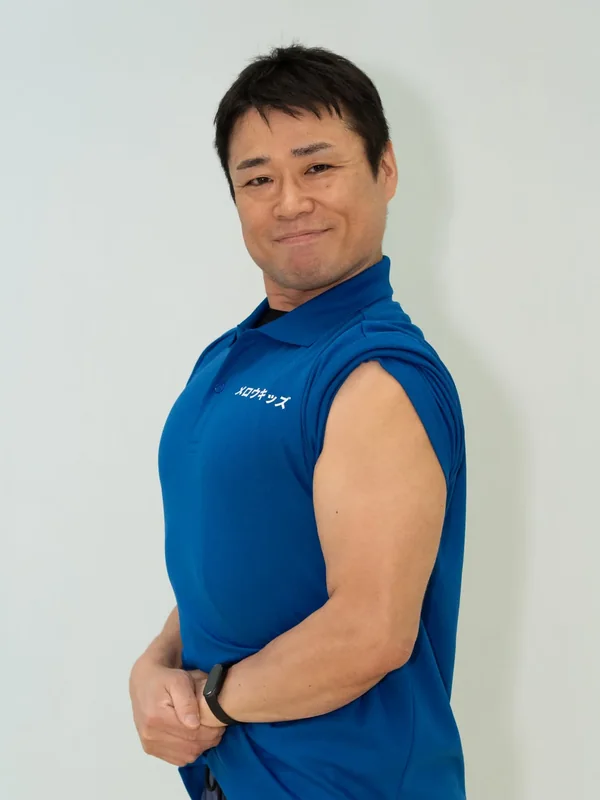

Staff
和田 晋弥（しんや先生）
作業療法士／ピラティスインストラクター／介護福祉士

作業療法士ピラティスインストラクター介護福祉士
これまでの歩み
20代の頃、介護福祉士として約7年間勤務しました。働きながら夜間学校に通い、作業療法士の資格を取得。その後、精神科領域・身体領域で合わせて15年ほど経験を重ねてきました。職場の知人でもあった平城代表から声をかけてもらい、その思いに共感してメロウキッズに加わりました。現在は、児童発達支援管理責任者の資格取得に向けて勉強中です。保育士の資格にも挑戦したいと思っています。
保護者・お子さまへ
メロウキッズの理念「円融無碍（えんゆうむげ）」には、すべてのものが自然に溶け合い、引っかかりがなくなるという意味があります。お子さんの「苦手なこと」やご家族の「困りごと」が少しずつほぐれて、毎日の暮らしにやさしく溶け込んでいくように——そんな支援を目指しています。
得意なこと・専門分野
子どもの心をひきつけ、夢中にさせること。
ひとことプロフィール
鹿児島生まれ。奄美で暮らして15年、すっかりこの島の魅力に引き込まれています。趣味は筋トレ・映画・漫画・海。ピラティスインストラクターの資格も持っています。お子さんだけでなく、親御さんもいかがですか？